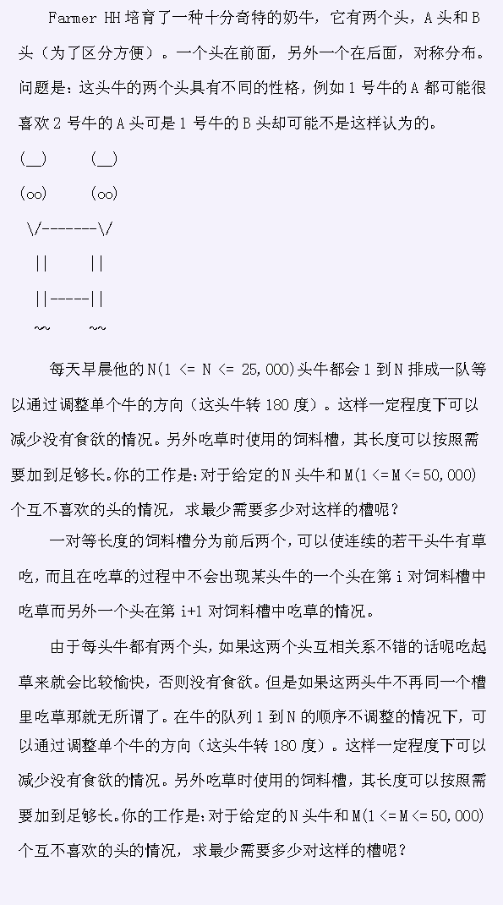
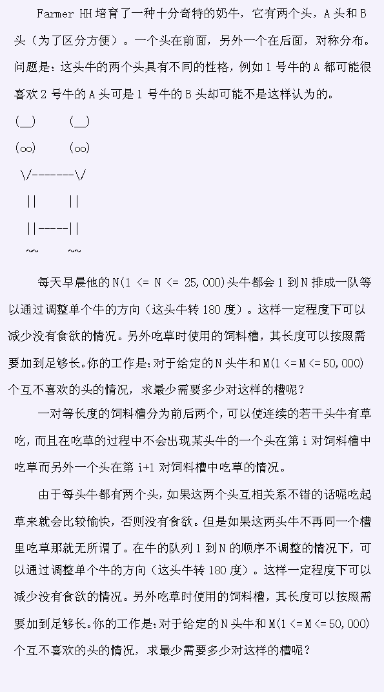

| F.A.Qs | Home | Discuss | ProblemSet | Status | Ranklist | Contest | 入门OJ | ModifyUser Xeonacid | Logout | 捐赠本站 |
|---|
| F.A.Qs | Home | Discuss | ProblemSet | Status | Ranklist | Contest | 入门OJ | ModifyUser Xeonacid | Logout | 捐赠本站 |
|---|

第一行有两个整数，N和M。 下面M行，每一行有一对互不喜欢的头的情况。如4 A 3 B，表示4号牛的A头不喜欢3号牛的B头。
输出一个整数，最少的槽数。